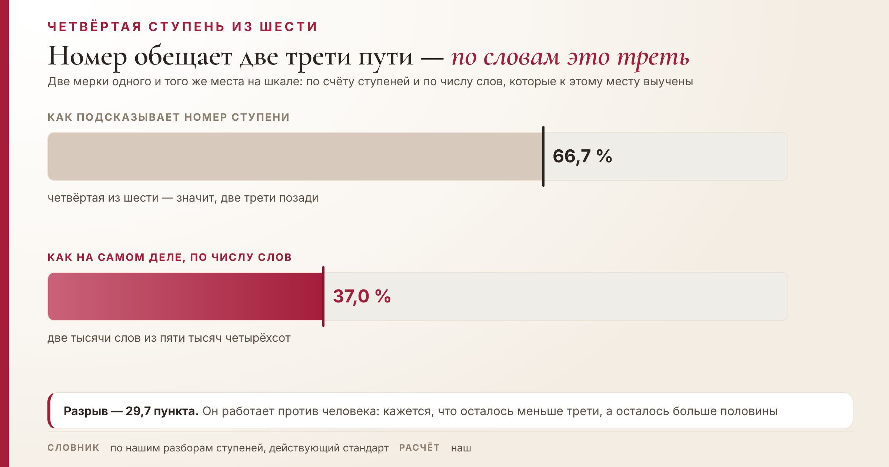
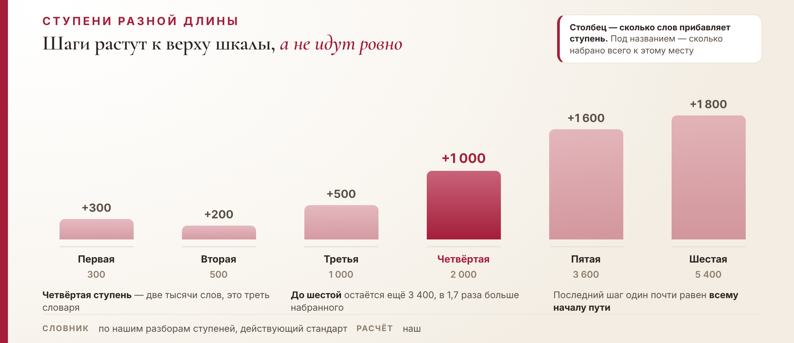

Уровень
Что даёт знание китайского на HSK 4: почему это треть пути, а не две трети


Четвёртая ступень из шести выглядит как 66,7 % пути — так подсказывает номер. По числу слов это 37 %, и разрыв почти в тридцать пунктов меняет все расчёты, которые человек строит на этом месте.
Разберу, сколько пути пройдено на самом деле, что четвёртая ступень позволяет делать и чего за ней ещё нет. Какие профессии связаны с языком и как устроена работа, разобрано отдельно: работа в Китае: визы и востребованные профессии.
Короткий ответ: не две трети, а треть
Номер ступени читается как доля: четвёртая из шести, значит пройдено две трети. Со словарём это не сходится.
К четвёртой ступени набрано 2 000 слов из 5 400 по действующему словнику. Это 37 % всего объёма, а не 66,7 %.
Разница в 29,7 пункта — не придирка к арифметике. Она объясняет, почему после четвёртой ступени движение вдруг кажется медленным: человек считает, что идёт по последней трети, а идёт по второй.
Ошибка здесь не в арифметике, а в привычке. Школьные и языковые шкалы мы читаем как линейки: пятая ступень из десяти — половина. Со словарём так не выходит, потому что шаги между ступенями разной длины.
Что это значит практически. Четвёртая ступень — хорошая, рабочая точка, но планировать от неё «осталось немного» нельзя. Осталось больше, чем пройдено.
Дальше — расчёт по ступеням, разбор того, что четвёртый уровень действительно позволяет, и отдельно про деньги, раз об этом спрашивают чаще всего.
Оговорюсь сразу: сумм и заработков я не называю. Мы их не публикуем, а выдумывать цифры я не стану — вместо них будет разбор того, от чего оплата зависит.
Почему номер ступени обманывает
Причина расхождения простая: ступени не равны между собой. Их шесть, но это шесть разных по длине отрезков: первые три вместе дают меньше пятой части словаря.
Ступени растут неравномерно. Первая даёт триста слов, вторая прибавляет всего двести, а пятая и шестая — по полторы тысячи и больше.
| Ступень | Слов накопительно | Прибавка | Доля словаря |
|---|---|---|---|
| Первая | 300 | 300 | 5,6 % |
| Вторая | 500 | 200 | 9,3 % |
| Третья | 1 000 | 500 | 18,5 % |
| Четвёртая | 2 000 | 1 000 | 37,0 % |
| Пятая | 3 600 | 1 600 | 66,7 % |
| Шестая | 5 400 | 1 800 | 100,0 % |
Это наш расчёт по словникам из наших же разборов уровней. Доли и отношения посчитаны в коде, сами словники — действующий стандарт.
Посмотрите на выделенную строку. К четвёртой ступени набрано меньше сорока процентов словаря, хотя по счёту ступеней пройдено две трети.
От четвёртой до шестой нужно выучить ещё 3 400 слов — в 1,7 раза больше, чем накоплено за все предыдущие ступени вместе.
Эта прибавка выглядит пугающе, но у неё есть и приятная сторона. Слова верхних ступеней встречаются реже, а значит, и нужны они не всем: многим рабочим задачам хватает того, что уже набрано к четвёртой.
А последний шаг, с пятой на шестую, — 1 800 слов. Это 90 % от всего, что человек знал к четвёртой ступени: один шаг почти равен всему началу пути.
Если смотреть не на слова, а на ощущение, перелом обычно чувствуется именно здесь. До четвёртой ступени каждый месяц заметно прибавляет, после — прибавляет столько же, но на большем объёме, и поэтому кажется, что движение замедлилось.
По прежнему словнику картина была ещё резче: там на четвёртую ступень приходилось около 24,0 % объёма. То есть дело не в конкретных числах стандарта, а в самом устройстве шкалы.
Отсюда же понятно, почему советы вроде «учи по столько-то слов в день» плохо работают на верхних ступенях. Одна и та же дневная норма даёт разный срок на разных отрезках, потому что сами отрезки разной длины.
Полезно держать в голове и обратное утешение. Доля словаря — не доля умений: человек на четвёртой ступени уже делает многое, хотя слов у него набрана треть, потому что самые частые слова попадают в начало списка.
И последнее наблюдение по таблице: самый короткий шаг — второй, всего двести слов. Именно поэтому вторая ступень почти никогда не становится отдельной целью, её проходят попутно.
Вывод из таблицы один. Номер ступени — это порядковый номер, а не процент пройденного, и путать их дорого: на этом ломаются сроки, которые человек сам себе назначил.

Что четвёртая ступень действительно позволяет
Теперь по делу, без обещаний. Вот что обычно получается у человека с этим уровнем, а что пока нет.
Читать несложные тексты. Переписку по знакомой теме, описания, короткие статьи — с остановками на незнакомых словах, но без ощущения стены.
Понимать речь в спокойном темпе, когда тема знакома и собеседник не торопится. Быстрый разговор нескольких человек понять пока трудно.
Вести простую переписку по рабочим вопросам: уточнить, согласовать, попросить. Длинные письма с оттенками смысла — ещё нет.
Учиться на подготовительном году в вузе: там как раз рассчитывают на этот уровень как на отправную точку, а дальше требования растут вместе с программой.
Чего обычно ещё нет. Свободного разговора, переговоров, чтения специальной литературы по своей области и письма от руки без подсказок.
Это нормальная картина для трети пути, и она становится неприятной только тогда, когда от четвёртой ступени ждут результатов шестой.
Чего письменный экзамен не проверяет
Второй разрыв важнее первого, и он не про количество слов. Он про то, какие стороны языка экзамен вообще измеряет.
| Сторона языка | Проверяется? | Где |
|---|---|---|
| Понимание на слух | да | раздел экзамена |
| Чтение | да | раздел экзамена |
| Письменная речь | с третьей ступени | раздел экзамена |
| Устная речь | нет | для неё есть отдельный экзамен |
Устная речь остаётся целиком снаружи. Её проверяют на своём экзамене, который сдают по желанию и отдельно от письменного: HSKK: как подготовиться к устному экзамену.
Для работы это решает многое. Переписку ведут не торопясь, со словарём под рукой, а в звонке времени на словарь нет.
Поэтому человек с четвёртой ступенью часто оказывается сильнее на бумаге, чем в разговоре, — и сам этого не ожидает, потому что сертификат такой разницы не показывает.
У меня занималась девушка, которая шла на четвёртую ступень с ясной целью: устроиться в компанию, работающую с поставщиками. Сертификат она получила, и довольно уверенно.
На собеседовании её попросили позвонить по рабочему вопросу прямо при них. Разговор не пошёл, хотя всю переписку по этой же теме она читала свободно.
Причина была не в уровне, а в том, что он измеряет. Письменный экзамен спрашивает понимание на слух и чтение, а звонок — это речь, и к ней её никто не готовил, включая меня.
Мы поменяли план: оставили словарь в покое на два месяца и занимались только разговором по рабочим темам, которые ей называли на том собеседовании.
Со второй попытки её взяли. Сертификат при этом остался прежним, ни одного нового слова в нём не прибавилось.
Отсюда вывод, который я теперь говорю всем на подходе к четвёртой ступени. Сертификат открывает дверь, а дальше спрашивают то, чего в нём нет.
И ещё одно наблюдение. Люди, которые учат язык под задачу, доходят до рабочего состояния заметно быстрее тех, кто учит «до уровня».
Причина простая: задача сама отбирает нужные слова, а ступень даёт их списком, где половина пока не пригодится.
От чего зависит оплата, если не от ступени
Это самый частый вопрос, и начну с прямого ответа. Сумм я не называю: мы их не публикуем, а придумывать правдоподобные числа — хуже, чем промолчать.
Зато можно честно разобрать, от чего оплата зависит на самом деле. Вот четыре вещи, которые меняют дело сильнее, чем номер в сертификате.
- Задача, а не ступень — перевод переписки и переговоры требуют очень разного: ступень говорит о языке, а платят за решённую задачу.
- Вторая специальность — язык плюс закупки, логистика, право или инженерия: чистое знание языка почти всегда стоит меньше связки.
- Устная сторона — письменный сертификат про неё не говорит ничего: её проверяют на собеседовании, и проверяют первой.
- Город и формат работы — удалённо, в поездках или на месте: это меняет условия сильнее, чем номер уровня.
Полезно и обратное наблюдение. Там, где язык — единственное требование, соискателей обычно много, а там, где он идёт довеском к специальности, выбор у работодателя куда меньше.
Отдельно скажу про ожидания. Человек, который учил язык два года, подсознательно ждёт, что оплата будет соразмерна вложенному времени. Но время — это ваша сторона сделки, а не чужая, и в расчёт работодателя оно не входит.
Общая логика такая. Язык — это не профессия, а способ делать свою работу в другой среде. Поэтому и платят не за язык, а за работу, которую он позволил выполнить.
Отсюда понятно, почему два человека с одинаковым сертификатом оказываются в очень разном положении. У одного язык приложен к специальности, у другого он единственное, что есть.
Про востребованные профессии и про то, как устроена работа с языком, у нас написано отдельно, и повторять это здесь я не буду: работа в Китае для иностранца. Про подработку во время учёбы — здесь: можно ли студентам работать в Китае.
Что делать после четвёртой ступени
Три пути, и выбор между ними зависит от задачи, а не от желания «повысить уровень».
Первый: вверх по ступеням. Если нужен вуз или формальное требование, следующая ступень — это ещё тысяча шестьсот слов. Как она устроена, разобрано отдельно: HSK 5: как сдать университетский экзамен.
Второй: вширь, под задачу. Взять свою область и учить её язык: закупки, логистику, оборудование. Слов меньше, пользы быстрее, но ступень при этом не растёт.
Третий: в сторону речи. Если работа предполагает разговор, разумнее вложиться в устную сторону, чем в следующую тысячу слов для чтения.
Эти пути можно совмещать, но не все сразу. Если взяться одновременно за следующую ступень, отраслевой словарь и разговор, обычно не двигается ничего: внимания хватает на одно направление, редко на два.
Чаще всего я советую третий, и вот почему.
Разрыв между чтением и речью к четвёртой ступени обычно самый большой за всё обучение, и он же мешает больше всего.
Проверить, какой путь ваш, можно одним вопросом: что именно у вас не получается сделать прямо сейчас. Если прочитать документ — первый или второй путь. Если объясниться — третий, и никакие новые слова его не заменят.
Сколько слов и знаков требует каждая ступень, посчитано у нас отдельно — это удобно прикладывать к своему плану: сколько иероглифов и слов требует каждая ступень.
Частые ошибки
- Считать ступени процентами — номер говорит о порядке, а не о доле пройденного.
- Планировать срок до шестой ступени по сроку до четвёртой — впереди больше слов, чем позади, и шаги длиннее.
- Ждать, что сертификат заменит разговор — устную сторону он не проверяет, а спрашивают её первой.
- Учить «до уровня», а не под задачу — список ступени наполовину состоит из слов, которые вам пока не нужны.
- Мерить пользу языка одними деньгами — оплату определяет задача и вторая специальность, а не номер в документе.
Первая ошибка тянет за собой вторую. Человек делит путь на шесть равных частей, назначает срок и бросает, когда срок проходит, а шестая ступень не приблизилась.
Третья ошибка обходится обиднее всех: к собеседованию человек приходит с документом, а спрашивают его про то, чего в документе нет, и выглядит это так, будто сертификат ничего не стоит. Он стоит — просто не этого.
Пятая заметна не сразу. Язык меняет не только доход: он меняет круг задач, которые вам вообще поручают, и это заметно раньше, чем меняется ставка.
Чего в статье нет намеренно
- Сумм и заработков. Мы их не публикуем, а выдуманные цифры хуже молчания.
- Прогноза на 2027 год. Подкрепить его нечем, и гадать я не стану — меняется устройство экзамена, а не ценность языка в будущем.
- Списка востребованных профессий. Это отдельная наша статья, ссылка стоит выше.
- Ответа «стоит ли учить китайский». Решение зависит от задачи, и у нас есть отдельный разбор по шагам.
- Названий работодателей и программ. У каждого свои требования, и меняются они чаще, чем статьи.
Этот список короткий не потому, что тем мало, а потому, что каждая из них требует своего разбора. Смешанная статья отвечает на все вопросы одинаково поверхностно.
К этому списку добавлю общее правило. Всё, что я не могу ни посчитать, ни подтвердить нашим разбором, в статью не попадает, даже если об этом часто спрашивают.
Про 2027 год скажу отдельно, раз этот вопрос задают. Утверждать, что будет давать язык через год, я не могу: это не расчёт, а предсказание, и честнее признать это прямо.
Частые вопросы (FAQ)
Что даёт знание китайского на уровне HSK 4?
Уверенное чтение несложных текстов, понимание речи в спокойном темпе и простую переписку. Этого хватает для учёбы на подготовительном году и для рабочих задач, где общение идёт письменно. Для переговоров и звонков этого обычно мало: устную речь письменный экзамен не проверяет вовсе.
Можно ли зарабатывать, зная китайский на HSK 4?
Сумм я не называю: мы их не публикуем, а выдумывать я не стану. Скажу о другом: платят не за ступень, а за решённую задачу, и ступень сама по себе ставку не определяет. Больше всего меняет дело связка языка со второй специальностью и умение говорить, а не номер в сертификате.
Сколько ещё учить от HSK 4 до HSK 6?
По действующему словнику — ещё 3 400 слов, то есть в 1,7 раза больше, чем набрано за все предыдущие ступени вместе. Это наш расчёт по числам из разборов уровней. Сколько это займёт по времени, зависит от того, сколько дней в неделю вы занимаетесь.
Хватает ли HSK 4 для работы с китайскими поставщиками?
Для переписки обычно да, для переговоров обычно нет. Разница именно в устной стороне, и проверяют её на собеседовании первой. Если работа предполагает звонки, к сертификату стоит добавить устный экзамен.
Что будет давать китайский в 2027 году?
Не знаю и предполагать не буду: это прогноз, а подкрепить его нечем. Единственное, что можно сказать уверенно, — устройство самого экзамена меняется, и об этих изменениях у нас есть отдельные разборы.
Стоит ли учить китайский, если до верхних ступеней далеко?
Это решение зависит от задачи, а не от расстояния, и у нас есть отдельная статья, где оно разбирается по шагам. Замечу одно: польза появляется задолго до верхних ступеней, просто она другая, чем кажется с самого начала.
И напоследок то, что важнее всех чисел выше. Четвёртая ступень — это не «почти всё», а крепкая середина, с которой язык впервые начинает приносить пользу. Обидно бывает не от того, что осталось много, а от того, что ожидали другого. Если хотите понять, что ваш уровень уже позволяет и куда двигаться дальше, приходите на бесплатный урок: посмотрим вашу задачу и выберем направление.
Источники
- Словник по ступеням — 300, 500, 1 000, 2 000, 3 600 и 5 400 слов накопительно — по нашим разборам уровней, действующий стандарт.
- Доли словаря, остаток до шестой ступени и отношения шагов — наш расчёт по этим числам, с ассертами в коде.
- Прежний словник упомянут для сравнения: там на четвёртую ступень приходилось около 24,0 % объёма.
- Сумм, ставок и заработков не называю: мы их не публикуем.
- Прогнозов на 2027 год не даю: подкрепить их нечем.
- Случай с ученицей взят из занятий Kitai School; имени и названия компании не привожу.